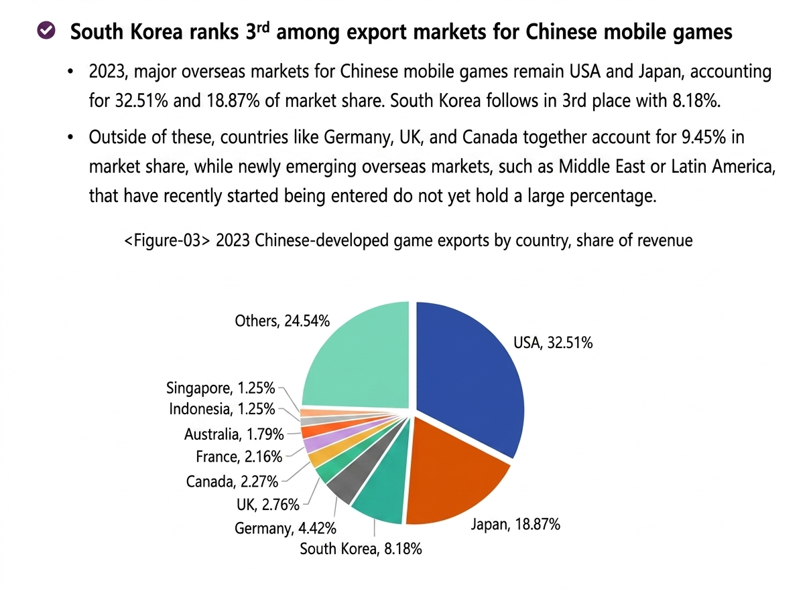
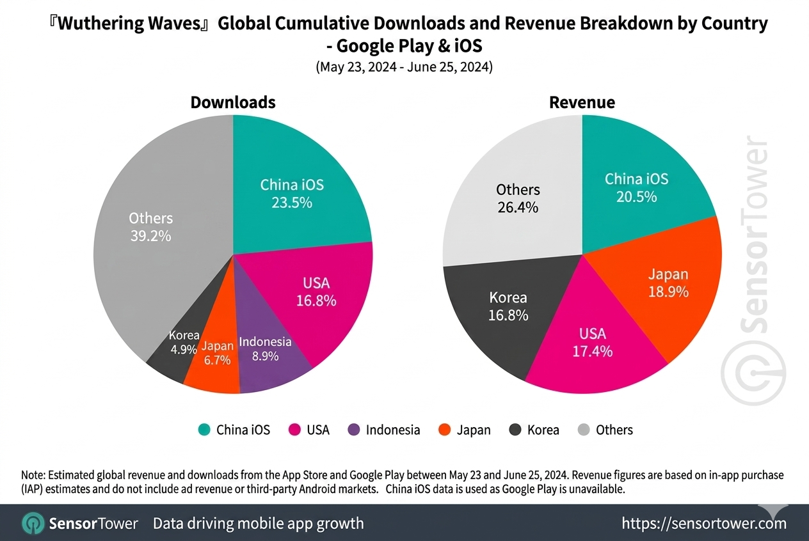
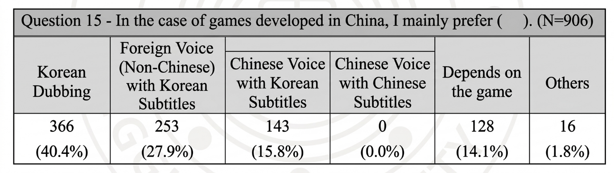
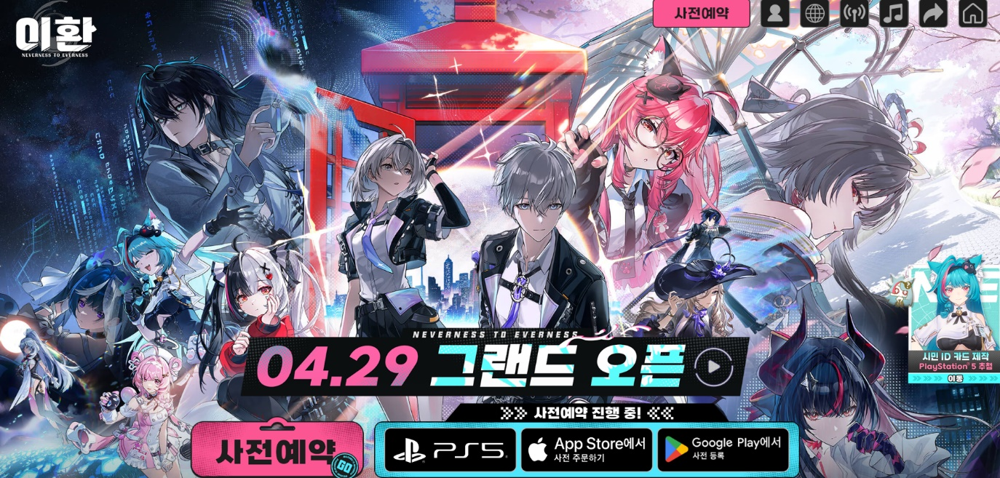

In September 2020, HoYoverse (then miHoYo) launched Genshin Impact simultaneously across the globe. Launching as the 6th most downloaded mobile game in Korea, it skyrocketed to the #1 spot within just 24 hours. HoYoverse provided full voiceovers in 13 languages, including Korean, English, Japanese, and Chinese. Compared to the gaming market's passive attitude toward localization at the time, this comprehensive support sparked an explosive response from Korean players.
Interestingly, this strategy is not only limited to Genshin Impact. Major Chinese anime-style games — such as Honkai: Star Rail, Wuthering Waves, and Arknights: Endfield — are all entering the Korean market with full Korean voiceover. Why are Chinese developers investing so much effort into Korean VO?
Why Chinese Developers are Targeting Korea
South Korea: The 3rd Largest Export Market for Chinese Mobile Games

South Korea: The 3rd Largest Export Market for Chinese Mobile Games
— [China 24-02] 2023 Review and 2024 Outlook of the Chinese Game Industry
There is a clear background as to why major Chinese developers like HoYoverse have shifted their focus to the global market. Since 2018, as the Chinese government tightened regulations on the gaming industry, developers were forced to look abroad for survival. In fact, "globalization" became a mandatory strategy for survival rather than a choice.
While the domestic market is recovering as regulations have since eased, the drive for global expansion has only intensified. In 2023, overseas revenue for Chinese games reached a record high of $18.5 billion, a 13% increase from the previous year. Within this growth, South Korea stood out as a particularly significant market. Accounting for 8% of total overseas revenue — following the U.S. (32%) and Japan (18%) — South Korea has firmly established itself as the 3rd largest and most vital overseas market for Chinese game developers.

Moreover, the significance of the Korean market goes beyond just its size. Looking at the first-month data for Wuthering Waves, South Korea ranked 5th in downloads with a 4.9% share, yet it climbed to 4th in revenue with a 16.8% share. The fact that the revenue ranking significantly outweighs the download ranking proves that Korean players are willing to invest generously and form powerful fandoms when they are satisfied with a game's quality.
This characteristic is even more evident in the key performance indicators. South Korea's Revenue Per Download (RPD) reached $16, the highest among all major markets — outperforming Japan ($13), the U.S. ($5), and China iOS ($4).
Korea's Response, Proven by Data
| Game | Developer | Performance in Korea |
|---|---|---|
| Genshin Impact | HoYoverse | Approx. $290 million in revenue over 3 years since launch |
| Honkai: Star Rail | HoYoverse | Approx. $34 million in revenue over the first 3 months since launch |
| Wuthering Waves | Kuro Games | Ranked #1 Globally in Revenue Per Download (RPD) during the first month |
| Arknights: Endfield | Hypergryph | Ranked #3 in App Store Revenue within 24 hours of launch |
Genshin Impact recorded a cumulative revenue of $290 million over its first three years, establishing South Korea as the 4th largest market in global revenue. Similarly, Honkai: Star Rail generated $34 million in just three months, securing its spot as the #4 mobile game by revenue in the domestic market.
This success trend is even more pronounced in the data for Wuthering Waves. While South Korea accounted for only 4.9% of total downloads, it contributed 16.8% of global revenue, ranking 4th in the world. Notably, South Korea's RPD stood at $16, the highest among major markets, outperforming Japan ($13), the U.S. ($5), and China ($4). This ability to generate explosive revenue from a relatively small user base demonstrates just how actively Korean players invest when they are satisfied with a game's quality.
The common thread among these titles, including Arknights: Endfield, is their proactive investment in localization — specifically full Korean voiceovers — right from day one. Ultimately, this meticulous localization strategy has been the key driver in unlocking the high purchasing power of Korean players and elevating South Korea to the top of the global revenue charts.
Is Simply Adding a Voiceover Enough?

A Study of Gamers' Preferences and Perceptions of Game Localization in South Korea — Kim Hong Kyun
According to the research, 40.4% of players responded that they prefer Korean voiceover for Chinese-developed games. On the other hand, 27.9% of users chose foreign audio even when Korean VO was available. This highlights a crucial point: it is not just about the existence of a voiceover, but rather the exceptionally high standards Korean users have for high-quality localization.
According to the research paper (conducted with 906 participants), the primary reasons for preferring foreign audio were: dissatisfaction with voice acting and direction (72 cases), awkward phrasing (35 cases), and quality failing to meet expectations (17 cases).
These findings clearly demonstrate that Korean players are not rejecting the Korean language itself; rather, they are demanding sophisticated direction that enables them to fully immerse themselves in the characters and the game's universe.
The Trend of Korean Voiceovers in Chinese Games Will Persevere

Most Chinese anime-style games are providing Korean VO
With upcoming titles like Neverness to Everness and Ananta, Chinese developers are moving beyond subtitles, actively leveraging voice localization to capture the Korean market. Providing Korean voiceover is no longer just an extra service; it has become a fundamental strategy for reaching Korean players.
The reason Chinese developers are focusing so heavily on Korean VO is simple: South Korea is a market well worth the investment, and its players respond decisively to high-quality content. Many games have already proven this with data, and this trend will apply to any global developer looking to succeed in the Korean market.
However, as more games adopt full voiceover, player expectations have also risen significantly. Simply offering a voiceover is no longer a point of differentiation. Ultimately, to successfully settle into the Korean market, the focus must shift beyond the mere existence of a voiceover to delivering high-fidelity localization that allows players to fully immerse themselves without any sense of disconnect.